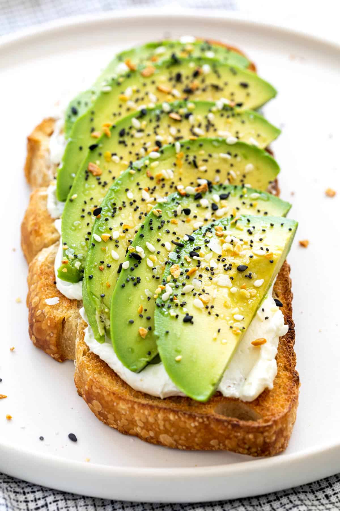

← Back to Recipes

Prep Time
5 minutes
Cook Time
3 minutes
Servings
1 person
Difficulty
Easy
Ingredients
- 2 slices of bread (sourdough, whole grain, or your favorite)
- 1 ripe avocado
- 1/2 lemon, juiced
- Salt and pepper to taste
- Red pepper flakes (optional)
- Extra virgin olive oil (optional)
- Microgreens or fresh herbs for garnish (optional)
Instructions
- Toast the bread: Toast your bread slices until golden brown and crispy. You can use a toaster, toaster oven, or grill them in a pan.
- Prepare the avocado: Cut the avocado in half, remove the pit, and scoop the flesh into a small bowl.
- Mash and season: Mash the avocado with a fork until smooth but still slightly chunky. Add lemon juice, salt, and pepper to taste. Mix well.
- Spread on toast: Generously spread the mashed avocado mixture onto your toasted bread slices.
- Add toppings: Sprinkle with red pepper flakes if desired, drizzle with a little olive oil, and garnish with microgreens or fresh herbs.
- Serve immediately: Enjoy your avocado toast while it's fresh and the bread is still warm and crispy!
Tips & Variations
- For extra flavor, try adding minced garlic, chopped cilantro, or diced red onion to the avocado mixture.
- Top with a poached or fried egg for a more substantial breakfast.
- Add sliced tomatoes, cucumber, or radishes for extra crunch and freshness.
- Try different bread types like rye, multigrain, or gluten-free options.
- For a spicy kick, add hot sauce or sriracha to the avocado mixture.